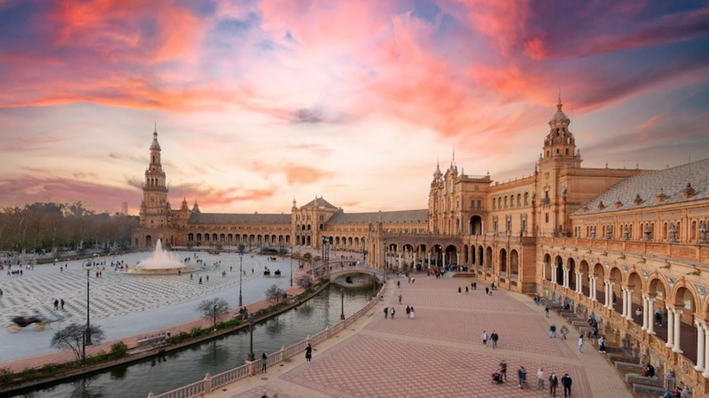
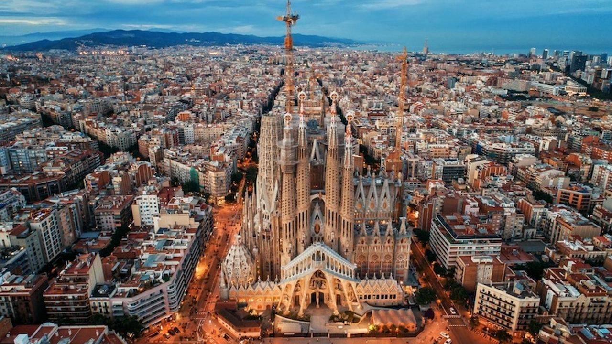
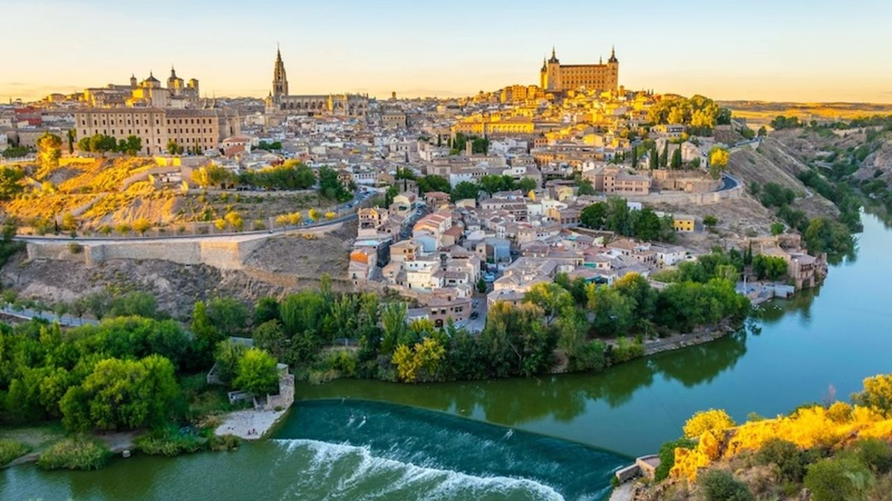
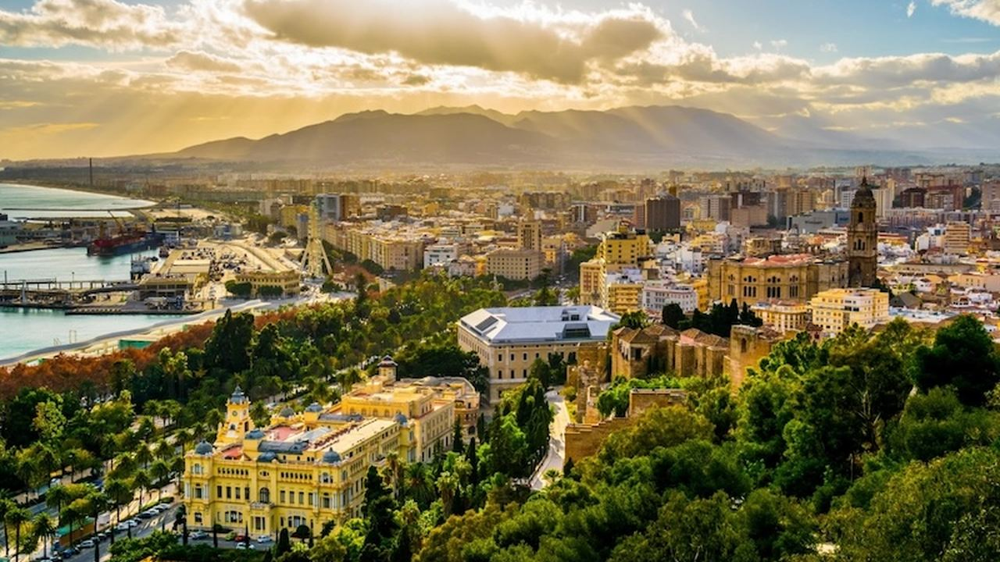
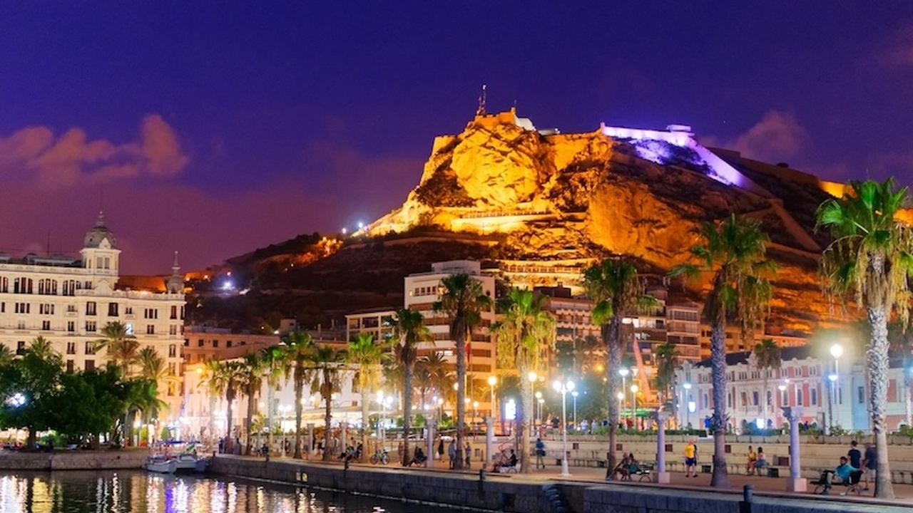
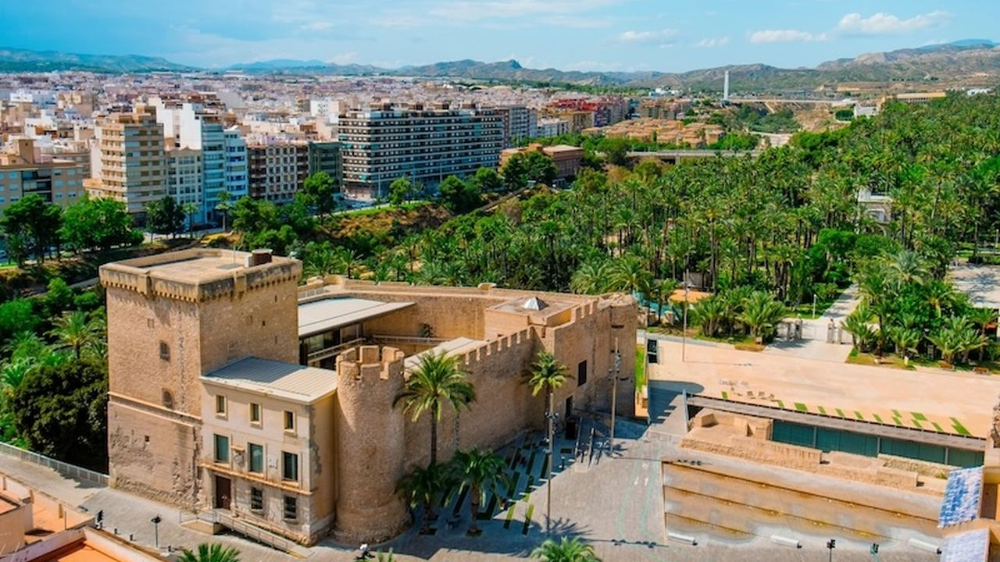
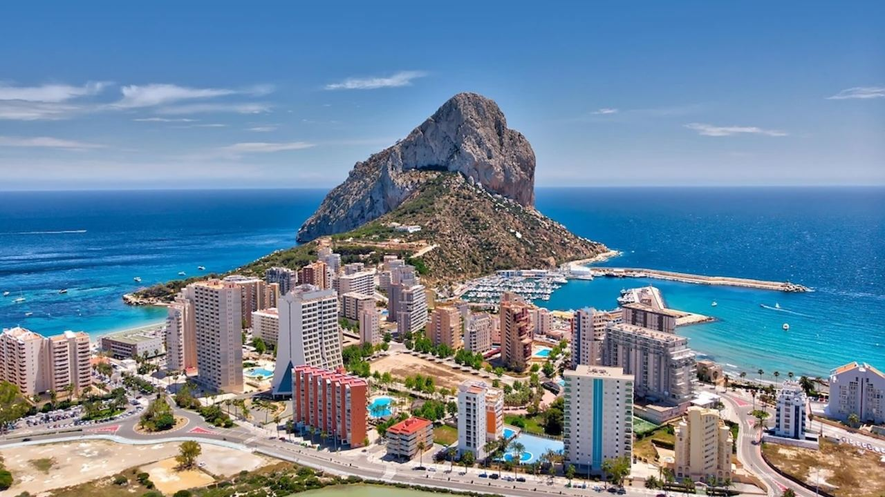
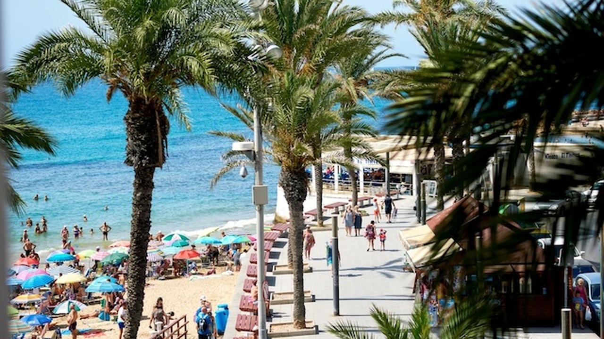
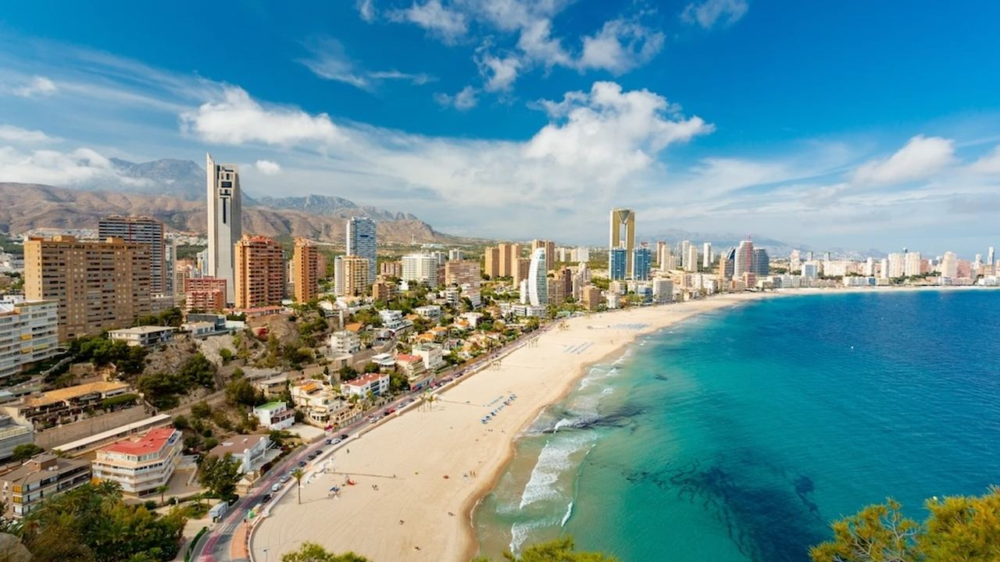
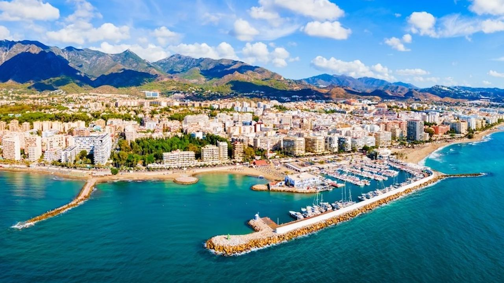

Places · Spain
The 10 Most Beautiful Cities in Spain
 By Lucyna Gacek · · updated · 4 min read
By Lucyna Gacek · · updated · 4 min read

In short: Spain's most beautiful cities mix history and the Mediterranean. Inland, Seville (Alcázar, cathedral, Plaza de España) and Toledo (the "city of three cultures") are among the most impressive historic centres in Europe. Barcelona is famous for Gaudí, and Málaga for Picasso and its Moorish Alcazaba. On the coast, Alicante, Elche with its UNESCO palm grove, Calpe below the Peñón de Ifach, Torrevieja with its pink salt lakes, Benidorm and Marbella combine beaches with real city life.
Spain has a long and layered history: Roman, Moorish, Jewish and Christian, then Renaissance, Baroque and modernist. You can read it in the streets of almost every city. Our list mixes famous names with coastal towns we know well, because many people who fall in love with Spain on a city break end up living by the sea.
Here are ten cities worth seeing, with the highlights and the festival to plan around in each.
1. Seville – the heart of Andalusia
The capital of Andalusia is the home of flamenco and some of Spain's greatest monuments: the Real Alcázar palace and the cathedral with its Giralda tower (both UNESCO World Heritage), the curved Plaza de España, the Torre del Oro and the Santa Cruz quarter. Come in spring for Holy Week and the April Fair, and avoid July and August, when temperatures often pass 40 °C.
2. Barcelona – Gaudí and the sea

Spain's second city combines the Gothic Quarter, the modernist buildings of Antoni Gaudí (the Sagrada Família, Park Güell, Casa Batlló) and city beaches at La Barceloneta. Try the Boqueria market and Catalan dishes such as crema catalana. The La Mercè festival in late September fills the streets with concerts and human towers.
3. Toledo – the city of three cultures

On a hill surrounded by the Tagus river, Toledo shows centuries of Christian, Muslim and Jewish life. See the Gothic cathedral, the Alcázar, the monastery of San Juan de los Reyes, the El Tránsito synagogue (now the Sephardic Museum) and the paintings of El Greco. It is an easy day trip from Madrid, 30 minutes by high-speed train.
4. Málaga – art and the Costa del Sol

Picasso's home town has become one of Spain's liveliest cities, with the Picasso Museum, the Moorish Alcazaba and Gibralfaro castle, the cathedral and a smart port promenade. Eat espetos (sardines grilled on a stick) on the beach. The Feria de Málaga in mid-August is one of the biggest summer fairs in Spain. See our Costa del Sol top 10.
5. Alicante – the capital of the Costa Blanca

Alicante is a sunny city by the sea, with Santa Bárbara castle above the old town, the Basilica of Santa María, the palm-lined Explanada de España and the city beach of El Postiguet. In June the Hogueras de San Juan fill the streets with giant figures that are burned on the night of 24 June. Read more in what to see in Alicante.
6. Elche – Europe's largest palm grove

Elche's Palmeral, with around 200,000 palm trees, is a UNESCO World Heritage site, and its Huerto del Cura garden is a peaceful place to walk. In the centre are the Basilica of Santa María and the Altamira palace. On 14–15 August the basilica stages the Misteri d'Elx, a medieval sung drama recognised by UNESCO.
7. Calpe – the town under the rock

Calpe is defined by the Peñón de Ifach, a 332 m rock rising from the sea that is now a natural park with a walking trail (visitor numbers are limited at busy times). Explore the small old town, the Torreó de la Peça tower, the Roman fish tanks of the Banys de la Reina and the salt lake where flamingos feed. Moors and Christians festivities in October are a highlight. See our homes in Calpe.
8. Torrevieja – salt lakes and habaneras

Torrevieja grew around its salt works, and its pink lagoon is one of the most photographed sights on the coast. Visit the Museum of the Sea and Salt, the S-61 Delfín submarine in the port, and in summer the international Habaneras competition, a celebration of sea songs brought back from Cuba. See our Torrevieja guide.
9. Benidorm – the Mediterranean skyline

Benidorm's towers are framed by two long bays and the Puig Campana mountain. Beyond the skyline there is a pretty old town, the Balcón del Mediterráneo viewpoint and the church of San Jaime and Santa Ana. Each winter the city hosts Benidorm Fest, which chooses Spain's Eurovision entry. Read what to see in Benidorm.
10. Marbella – the elegant side of the coast

Marbella combines a whitewashed old town, Puerto Banús, the dunes of Artola and golf courses such as Las Brisas and Los Naranjos. In summer the Starlite festival brings international artists to an open-air auditorium in a quarry. Read what to see in Marbella.
Frequently asked questions
What is the most beautiful city in Spain?
Many travellers choose Seville for its monuments and atmosphere. Toledo, Barcelona and Granada are also often named.
Which Spanish cities by the sea are worth visiting?
Barcelona, Málaga, Alicante and Marbella are the best-known. On the Costa Blanca, Calpe, Torrevieja and Benidorm are also popular.
What is the best time to visit Spanish cities?
Spring (April to June) and autumn (September to November). Inland cities such as Seville and Toledo are very hot in July and August.
Which Spanish city has the most UNESCO sites?
Several cities have more than one. Seville's cathedral, Alcázar and Archive of the Indies share one listing, and Elche has both its Palmeral and the Misteri d'Elx.
From city break to life by the sea
Many of our clients discovered Spain through its cities, then chose a home on the coast with Alicante or Málaga airport close by. If you would like to do the same, get in touch.
Sources: UNESCO World Heritage List – Spain · Spain's official tourism portal · Turisme Comunitat Valenciana